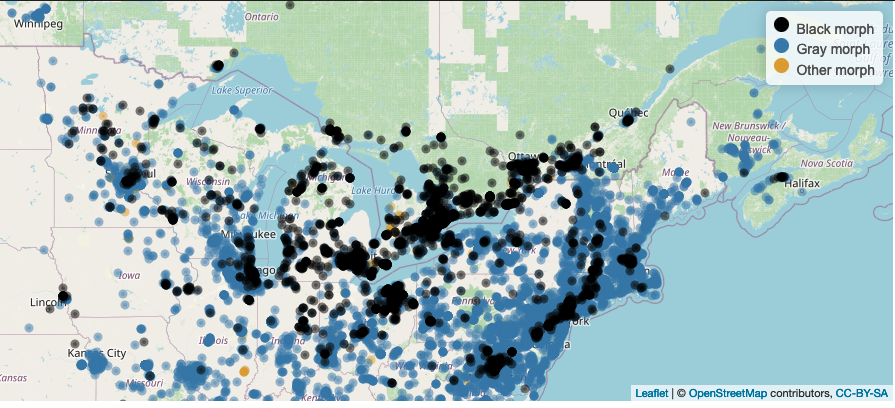

<!DOCTYPE html>

<html>

<head>

<meta charset="utf-8" />
<meta name="generator" content="pandoc" />
<meta http-equiv="X-UA-Compatible" content="IE=EDGE" />


<title>SquirrelMapper</title>

<script src="site_libs/jquery-1.11.3/jquery.min.js"></script>
<meta name="viewport" content="width=device-width, initial-scale=1" />
<link href="site_libs/bootstrap-3.3.5/css/cosmo.min.css" rel="stylesheet" />
<script src="site_libs/bootstrap-3.3.5/js/bootstrap.min.js"></script>
<script src="site_libs/bootstrap-3.3.5/shim/html5shiv.min.js"></script>
<script src="site_libs/bootstrap-3.3.5/shim/respond.min.js"></script>
<script src="site_libs/navigation-1.1/tabsets.js"></script>
<script src="site_libs/accessible-code-block-0.0.1/empty-anchor.js"></script>
<link href="site_libs/font-awesome-5.1.0/css/all.css" rel="stylesheet" />
<link href="site_libs/font-awesome-5.1.0/css/v4-shims.css" rel="stylesheet" />
<!DOCTYPE html PUBLIC "-//W3C//DTD HTML 4.01//EN" "http://www.w3.org/TR/html4/strict.dtd">
<html>
<head>
  <meta http-equiv="Content-Type" content="text/html; charset=utf-8">
  <meta http-equiv="Content-Style-Type" content="text/css">
  <title>SquirrelMapper</title>
  <meta name="Generator" content="Cocoa HTML Writer">
  <meta name="CocoaVersion" content="1504">
  <!-- this script changes the anchor position -->
  <!-- http://jsfiddle.net/ianclark001/rkocah23/ -->
<script>
(function(document, history, location) {
  var HISTORY_SUPPORT = !!(history && history.pushState);

  var anchorScrolls = {
    ANCHOR_REGEX: /^#[^ ]+$/,
    OFFSET_HEIGHT_PX: 65,

    /**
     * Establish events, and fix initial scroll position if a hash is provided.
     */
    init: function() {
      this.scrollToCurrent();
      $(window).on('hashchange', $.proxy(this, 'scrollToCurrent'));
      $('body').on('click', 'a', $.proxy(this, 'delegateAnchors'));
    },

    /**
     * Return the offset amount to deduct from the normal scroll position.
     * Modify as appropriate to allow for dynamic calculations
     */
    getFixedOffset: function() {
      return this.OFFSET_HEIGHT_PX;
    },

    /**
     * If the provided href is an anchor which resolves to an element on the
     * page, scroll to it.
     * @param  {String} href
     * @return {Boolean} - Was the href an anchor.
     */
    scrollIfAnchor: function(href, pushToHistory) {
      var match, anchorOffset;

      if(!this.ANCHOR_REGEX.test(href)) {
        return false;
      }

      match = document.getElementById(href.slice(1));

      if(match) {
        anchorOffset = $(match).offset().top - this.getFixedOffset();
        $('html, body').animate({ scrollTop: anchorOffset});

        // Add the state to history as-per normal anchor links
        if(HISTORY_SUPPORT && pushToHistory) {
          history.pushState({}, document.title, location.pathname + href);
        }
      }

      return !!match;
    },
    
    /**
     * Attempt to scroll to the current location's hash.
     */
    scrollToCurrent: function(e) { 
      if(this.scrollIfAnchor(window.location.hash) && e) {
        e.preventDefault();
      }
    },

    /**
     * If the click event's target was an anchor, fix the scroll position.
     */
    delegateAnchors: function(e) {
      var elem = e.target;

      if(this.scrollIfAnchor(elem.getAttribute('href'), true)) {
        e.preventDefault();
      }
    }
  };

    $(document).ready($.proxy(anchorScrolls, 'init'));
})(window.document, window.history, window.location);
</script>

<!-- this script changes the anchor position -->
<!-- http://jsfiddle.net/ianclark001/rkocah23/ -->
<script>
(function(document, history, location) {
  var HISTORY_SUPPORT = !!(history && history.pushState);

  var anchorScrolls = {
    ANCHOR_REGEX: /^#[^ ]+$/,
    OFFSET_HEIGHT_PX: 50,

    /**
     * Establish events, and fix initial scroll position if a hash is provided.
     */
    init: function() {
      this.scrollToCurrent();
      $(window).on('hashchange', $.proxy(this, 'scrollToCurrent'));
      $('body').on('click', 'a', $.proxy(this, 'delegateAnchors'));
    },

    /**
     * Return the offset amount to deduct from the normal scroll position.
     * Modify as appropriate to allow for dynamic calculations
     */
    getFixedOffset: function() {
      return this.OFFSET_HEIGHT_PX;
    },

    /**
     * If the provided href is an anchor which resolves to an element on the
     * page, scroll to it.
     * @param  {String} href
     * @return {Boolean} - Was the href an anchor.
     */
    scrollIfAnchor: function(href, pushToHistory) {
      var match, anchorOffset;

      if(!this.ANCHOR_REGEX.test(href)) {
        return false;
      }

      match = document.getElementById(href.slice(1));

      if(match) {
        anchorOffset = $(match).offset().top - this.getFixedOffset();
        $('html, body').animate({ scrollTop: anchorOffset});

        // Add the state to history as-per normal anchor links
        if(HISTORY_SUPPORT && pushToHistory) {
          history.pushState({}, document.title, location.pathname + href);
        }
      }

      return !!match;
    },
    
    /**
     * Attempt to scroll to the current location's hash.
     */
    scrollToCurrent: function(e) { 
      if(this.scrollIfAnchor(window.location.hash) && e) {
        e.preventDefault();
      }
    },

    /**
     * If the click event's target was an anchor, fix the scroll position.
     */
    delegateAnchors: function(e) {
      var elem = e.target;

      if(this.scrollIfAnchor(elem.getAttribute('href'), true)) {
        e.preventDefault();
      }
    }
  };

    $(document).ready($.proxy(anchorScrolls, 'init'));
})(window.document, window.history, window.location);
</script>

</head>
<body>
</body>
</html>


<style type="text/css">
h1 {
  font-size: 34px;
}
h1.title {
  font-size: 38px;
}
h2 {
  font-size: 30px;
}
h3 {
  font-size: 24px;
}
h4 {
  font-size: 18px;
}
h5 {
  font-size: 16px;
}
h6 {
  font-size: 12px;
}
.table th:not([align]) {
  text-align: left;
}
</style>

<link rel="stylesheet" href="../styles.css" type="text/css" />


<style type = "text/css">
.main-container {
  max-width: 940px;
  margin-left: auto;
  margin-right: auto;
}
code {
  color: inherit;
  background-color: rgba(0, 0, 0, 0.04);
}
img {
  max-width:100%;
}
.tabbed-pane {
  padding-top: 12px;
}
.html-widget {
  margin-bottom: 20px;
}
button.code-folding-btn:focus {
  outline: none;
}
summary {
  display: list-item;
}
</style>


<style type="text/css">
/* padding for bootstrap navbar */
body {
  padding-top: 51px;
  padding-bottom: 40px;
}
/* offset scroll position for anchor links (for fixed navbar)  */
.section h1 {
  padding-top: 56px;
  margin-top: -56px;
}
.section h2 {
  padding-top: 56px;
  margin-top: -56px;
}
.section h3 {
  padding-top: 56px;
  margin-top: -56px;
}
.section h4 {
  padding-top: 56px;
  margin-top: -56px;
}
.section h5 {
  padding-top: 56px;
  margin-top: -56px;
}
.section h6 {
  padding-top: 56px;
  margin-top: -56px;
}
.dropdown-submenu {
  position: relative;
}
.dropdown-submenu>.dropdown-menu {
  top: 0;
  left: 100%;
  margin-top: -6px;
  margin-left: -1px;
  border-radius: 0 6px 6px 6px;
}
.dropdown-submenu:hover>.dropdown-menu {
  display: block;
}
.dropdown-submenu>a:after {
  display: block;
  content: " ";
  float: right;
  width: 0;
  height: 0;
  border-color: transparent;
  border-style: solid;
  border-width: 5px 0 5px 5px;
  border-left-color: #cccccc;
  margin-top: 5px;
  margin-right: -10px;
}
.dropdown-submenu:hover>a:after {
  border-left-color: #ffffff;
}
.dropdown-submenu.pull-left {
  float: none;
}
.dropdown-submenu.pull-left>.dropdown-menu {
  left: -100%;
  margin-left: 10px;
  border-radius: 6px 0 6px 6px;
}
</style>

<script>
// manage active state of menu based on current page
$(document).ready(function () {
  // active menu anchor
  href = window.location.pathname
  href = href.substr(href.lastIndexOf('/') + 1)
  if (href === "")
    href = "index.html";
  var menuAnchor = $('a[href="' + href + '"]');

  // mark it active
  menuAnchor.parent().addClass('active');

  // if it's got a parent navbar menu mark it active as well
  menuAnchor.closest('li.dropdown').addClass('active');
});
</script>

<!-- tabsets -->

<style type="text/css">
.tabset-dropdown > .nav-tabs {
  display: inline-table;
  max-height: 500px;
  min-height: 44px;
  overflow-y: auto;
  background: white;
  border: 1px solid #ddd;
  border-radius: 4px;
}

.tabset-dropdown > .nav-tabs > li.active:before {
  content: "";
  font-family: 'Glyphicons Halflings';
  display: inline-block;
  padding: 10px;
  border-right: 1px solid #ddd;
}

.tabset-dropdown > .nav-tabs.nav-tabs-open > li.active:before {
  content: "&#xe258;";
  border: none;
}

.tabset-dropdown > .nav-tabs.nav-tabs-open:before {
  content: "";
  font-family: 'Glyphicons Halflings';
  display: inline-block;
  padding: 10px;
  border-right: 1px solid #ddd;
}

.tabset-dropdown > .nav-tabs > li.active {
  display: block;
}

.tabset-dropdown > .nav-tabs > li > a,
.tabset-dropdown > .nav-tabs > li > a:focus,
.tabset-dropdown > .nav-tabs > li > a:hover {
  border: none;
  display: inline-block;
  border-radius: 4px;
  background-color: transparent;
}

.tabset-dropdown > .nav-tabs.nav-tabs-open > li {
  display: block;
  float: none;
}

.tabset-dropdown > .nav-tabs > li {
  display: none;
}
</style>

<!-- code folding -->


</head>

<body>


<div class="container-fluid main-container">


<div class="navbar navbar-default  navbar-fixed-top" role="navigation">
  <div class="container">
    <div class="navbar-header">
      <button type="button" class="navbar-toggle collapsed" data-toggle="collapse" data-target="#navbar">
        <span class="icon-bar"></span>
        <span class="icon-bar"></span>
        <span class="icon-bar"></span>
      </button>
      <a class="navbar-brand" href="index.html">SquirrelMapper</a>
    </div>
    <div id="navbar" class="navbar-collapse collapse">
      <ul class="nav navbar-nav">
        <li>
  <a href="index.html">Home</a>
</li>
<li>
  <a href="about.html">About</a>
</li>
<li>
  <a href="results.html">Results</a>
</li>
<li>
  <a href="map.html">Squirrel Map</a>
</li>
<li>
  <a href="faq.html">FAQ</a>
</li>
<li>
  <a href="contact.html">Contact</a>
</li>
      </ul>
      <ul class="nav navbar-nav navbar-right">
        <li>
  <a href="mailto:cosentino@hws.edu">
    <span class="fa fa-envelope"></span>
     
  </a>
</li>
<li>
  <a href="https://twitter.com/squirrelsevolve">
    <span class="fa fa-twitter"></span>
     
  </a>
</li>
      </ul>
    </div><!--/.nav-collapse -->
  </div><!--/.container -->
</div><!--/.navbar -->

<div class="fluid-row" id="header">


<h1 class="title toc-ignore">SquirrelMapper</h1>

</div>


<script type="text/javascript">
$('.title').remove()
</script>
<p><br></p>
<div id="distributed-research-project-to-test-for-parallel-urban-to-rural-clines" class="section level2">
<h2><strong>Distributed research project to test for parallel urban-to-rural clines</strong></h2>
<div id="project-background-urban-areas-are-the-fastest-growing-ecosystem-on-earth.-ecological-conditions-vary-sharply-between-cities-and-rural-areas-and-cities-are-more-similar-to-each-other-in-many-respects-than-to-adjacent-rural-lands-e.g.-extensive-impervious-cover.-the-novel-conditions-found-in-cities-are-hypothesized-to-cause-parallel-evolution-of-trait-variation-but-tests-of-parallel-evolution-are-often-limited-by-the-logistical-constraints-of-conducting-studies-across-multiple-replicate-cities.-we-seek-to-form-a-network-of-collaborators-to-test-across-multiple-cities-in-north-america-whether-urbanization-causes-parallel-evolution-of-coat-color-in-eastern-gray-squirrels-sciurus-carolinensis.-gray-squirrels-commonly-have-two-coat-colors-gray-and-black-inherited-in-a-simple-mendelian-fashion-at-the-melanocortin-1-receptor-gene.-previous-work-suggests-differences-in-crypsis-between-color-morphs-in-urban-and-rural-environments-may-generate-clines-in-melanism-but-widespread-tests-for-urban-rural-clines-in-squirrel-melanism-have-been-limited-to-analyses-of-incidental-observations-of-squirrels-via-community-science-e.g.-inaturalist.-here-we-seek-your-collaboration-as-a-partner-to-test-for-urban-rural-clines-in-melanism-using-wildlife-cameras-as-a-standardized-sampling-approach.-the-protocol-is-designed-to-also-function-as-an-educational-activity-for-engaging-students-grades-9-12-and-undergraduates-in-field-surveys-of-mammal-populations." class="section level4">
<h4><strong>Project background:</strong> Urban areas are the fastest growing ecosystem on Earth. Ecological conditions vary sharply between cities and rural areas, and cities are more similar to each other in many respects than to adjacent rural lands (e.g., extensive impervious cover). The novel conditions found in cities are hypothesized to cause parallel evolution of trait variation, but tests of parallel evolution are often limited by the logistical constraints of conducting studies across multiple, replicate cities. We seek to form a network of collaborators to test across multiple cities in North America whether urbanization causes parallel evolution of coat color in eastern gray squirrels (<i>Sciurus carolinensis</i>). Gray squirrels commonly have two coat colors – gray and black – inherited in a simple Mendelian fashion at the melanocortin-1 receptor gene. Previous work suggests differences in crypsis between color morphs in urban and rural environments may generate clines in melanism, but widespread tests for urban-rural clines in squirrel melanism have been limited to analyses of incidental observations of squirrels via community science (e.g., iNaturalist). Here we seek your collaboration as a partner to test for urban-rural clines in melanism using wildlife cameras as a standardized sampling approach. The protocol is designed to also function as an educational activity for engaging students (grades 9-12 and undergraduates) in field surveys of mammal populations.</h4>
</div>
<div id="basic-approach-camera-traps-will-be-used-to-document-the-occurrence-and-relative-abundance-of-each-morph-along-an-urbanization-gradient.-collaborators-will-establish-camera-traps-at-20-30-sites-along-at-least-one-urban-to-rural-transect-in-their-home-city.-camera-traps-will-be-left-in-place-for-4-weeks-and-then-removed.-collaborators-will-also-conduct-a-short-visual-survey-for-squirrels-when-deploying-and-retrieving-camera-traps.-check-out-our-sampling-protocol-for-all-the-details." class="section level4">
<h4><strong>Basic approach:</strong> Camera traps will be used to document the occurrence and relative abundance of each morph along an urbanization gradient. Collaborators will establish camera traps at 20-30 sites along at least one urban-to-rural transect in their home city. Camera traps will be left in place for 4 weeks and then removed. Collaborators will also conduct a short visual survey for squirrels when deploying and retrieving camera traps. <a href="https://docs.google.com/document/d/1mbDwk2ERQrSb3EqxGZqbwUgfi18dwqoO9w7LlnYSlfg/edit?usp=sharing">Check out our sampling protocol for all the details.</a></h4>
</div>
<div id="materials-and-cost-for-labs-that-have-camera-traps-and-sd-cards-already-the-only-costs-are-batteries-for-the-cameras-and-gas-for-transportation.-if-you-would-like-to-participate-but-do-not-have-camera-traps-you-can-purchase-your-own-camera-trap-equipment.-camera-traps-sufficient-for-this-project-run-about-100-150each.-sd-cards-are-about-5-each-and-you-can-get-a-pack-of-batteries-to-run-up-to-30-cameras-for-about-50.-optional-equipment-includes-a-security-case-and-lock-for-each-camera.-we-may-have-a-limited-number-of-camera-traps-that-we-can-loan-out-for-a-four-week-sampling-timeframe-so-if-youd-like-to-participate-but-cannot-purchase-your-own-equipment-please-still-feel-free-to-contact-us." class="section level4">
<h4><strong>Materials and cost:</strong> For labs that have camera traps and SD cards already, the only costs are batteries for the cameras and gas for transportation. If you would like to participate but do not have camera traps, you can purchase your own camera trap equipment. Camera traps sufficient for this project run about $100-150/each. SD cards are about $5 each, and you can get a pack of batteries to run up to 30 cameras for about $50. Optional equipment includes a security case and lock for each camera. We may have a limited number of camera traps that we can loan out for a four-week sampling timeframe, so if you’d like to participate but cannot purchase your own equipment, please still feel free to contact us.</h4>
</div>
<div id="authorship-groups-of-up-to-two-individuals-who-collect-camera-trap-data-in-at-least-one-city-following-the-guidelines-below-will-be-offered-authorship-on-the-first-paper-published-with-the-aggregate-data-collected-see-below-for-more-details." class="section level4">
<h4><strong>Authorship:</strong> Groups of up to two individuals who collect camera trap data in at least one city following the guidelines below will be offered authorship on the first paper published with the aggregate data collected (see below for more details).</h4>
</div>
<div id="timing-sampling-must-be-conducted-prior-to-august-2022." class="section level4">
<h4><strong>Timing:</strong> Sampling must be conducted prior to August 2022.</h4>
</div>
<div id="which-cities-for-now-we-are-restricting-this-project-to-cities-in-the-native-range-of-eastern-gray-squirrels-focused-in-the-upper-midwest-northeastern-us-and-southeastern-canada-see-map-of-study-area-below.-click-here-to-see-a-map-of-cities-currently-enrolled-in-the-study." class="section level4">
<h4><strong>Which cities?:</strong> For now we are restricting this project to cities in the native range of eastern gray squirrels, focused in the upper Midwest, northeastern US, and southeastern Canada (see map of study area below). <a href="https://www.google.com/maps/d/edit?mid=1hVsdgMm_khsf05v5D-eAJ6XMGHMwyIK3&amp;usp=sharing">Click here to see a map of cities currently enrolled in the study.</a></h4>
<div class="figure" style="text-align: center">

<p class="caption">
<a href="https://squirrelmapper.org/map.html">A interactive version of this map can be found here.</a>
</p>
</div>
</div>
<div id="interested-click-here-to-express-interest-in-participating-the-link-will-take-you-to-a-simple-survey-asking-a-few-questions-about-where-and-when-you-would-conduct-sampling-and-whether-you-have-your-own-camera-trapping-equipment.-we-will-follow-up-to-confirm-that-your-city-would-be-a-good-fit-for-the-project." class="section level4">
<h4><strong>Interested?</strong> <a href="https://forms.gle/ocZeYAqNsVLNbsYr8">Click here to express interest in participating!</a> The link will take you to a simple survey asking a few questions about where and when you would conduct sampling and whether you have your own camera trapping equipment. We will follow up to confirm that your city would be a good fit for the project.</h4>
</div>
</div>

<div id="footer">
<center>
<br>
<br>
<br>
<br>
<p>Last modified January, 2022</p>
</center>
</div>


</div>

<script>

// add bootstrap table styles to pandoc tables
function bootstrapStylePandocTables() {
  $('tr.header').parent('thead').parent('table').addClass('table table-condensed');
}
$(document).ready(function () {
  bootstrapStylePandocTables();
});


</script>

<!-- tabsets -->

<script>
$(document).ready(function () {
  window.buildTabsets("TOC");
});

$(document).ready(function () {
  $('.tabset-dropdown > .nav-tabs > li').click(function () {
    $(this).parent().toggleClass('nav-tabs-open')
  });
});
</script>

<!-- code folding -->


<!-- dynamically load mathjax for compatibility with self-contained -->
<script>
  (function () {
    var script = document.createElement("script");
    script.type = "text/javascript";
    script.src  = "https://mathjax.rstudio.com/latest/MathJax.js?config=TeX-AMS-MML_HTMLorMML";
    document.getElementsByTagName("head")[0].appendChild(script);
  })();
</script>

</body>
</html>
